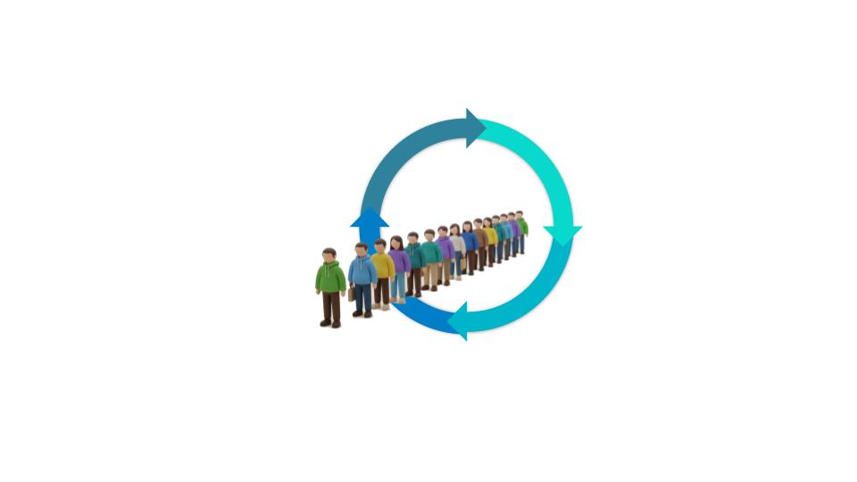

1. איסוף נתונים
לצלם תמונות איכותיות של סוגי התורים:
תור ארוך, תור קצר וללא תור.

לצלם תמונות איכותיות של סוגי התורים:
תור ארוך, תור קצר וללא תור.
נתייג כל תמונה למחלקה המתאימה:
תור ארוך, תור קצר וללא תור.
אימון מודל AI בעזרת התמונות המתויגות.
נראה למודל תמונות חדשות של תור.
נבדוק האם המודל מצליח לזהות היטב אם זו תמונה תור ארוך, קצר, או שאין תור.